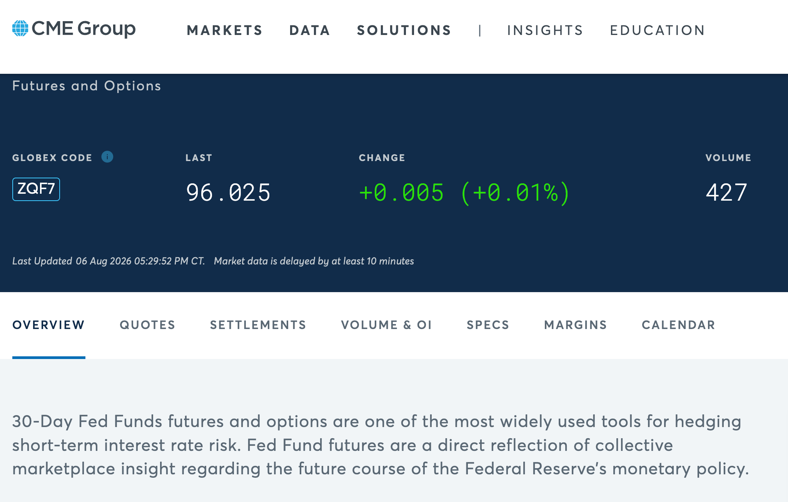
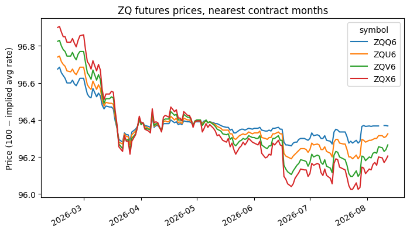
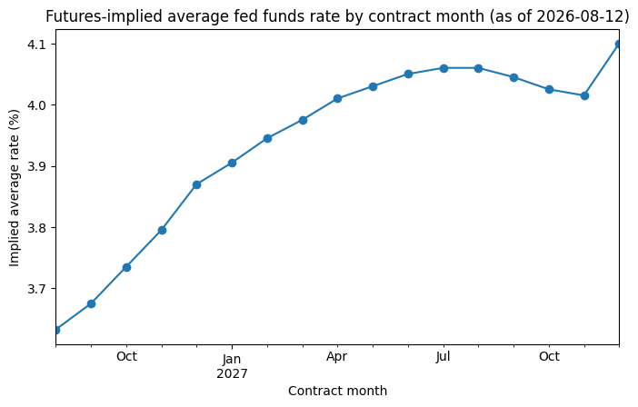

01. 30-Day Fed Funds Futures (ZQ) Data from Databento#
The CME’s 30-Day Fed Funds futures (product code ZQ) are the raw material behind the famous CME FedWatch tool. Each monthly contract settles at
where \(\bar{r}\) is the calendar-day average of the daily effective federal funds rate (EFFR) over the contract month, as published by the New York Fed. Days without a published rate (weekends, holidays) carry forward the previous day’s rate.
That settlement rule is what makes ZQ prices interesting: buying the September contract at 96.30 is a bet that fed funds will average \(100 - 96.30 = 3.70\%\) during September. The price is the market’s forecast of Fed policy for that month. In the next notebook we turn these prices into FedWatch-style probabilities for the next FOMC decision; here we get to know the data itself.

CME’s product page
for 30-Day Fed Funds futures — here quoting ZQF7, a symbol we will learn
to decode below.
How the data was pulled#
This project follows the course convention: pull_* scripts hit the network
and cache to _data/; notebooks only ever load_* from that cache, so they
run offline. The pull lives in pull_fed_funds_futures.py and its core is
just this (shown here, not executed):
import databento as db
client = db.Historical(key=DATABENTO_API_KEY)
query = dict(
dataset="GLBX.MDP3", # CME Globex market data
symbols=["ZQ.FUT"], # parent symbology: every listed ZQ contract at once
stype_in="parent",
schema="ohlcv-1d", # one OHLCV bar per contract per trading day
start=START_DATE, # trailing ~6 months
end=END_DATE,
)
cost = client.metadata.get_cost(**query) # free metadata call
assert_query_is_free(cost) # abort unless the estimate is $0.00
df = client.timeseries.get_range(**query).to_df()
Things worth noticing:
Dataset
GLBX.MDP3is CME Globex’s market-by-order feed; Databento derives all simpler schemas from it. Our course subscription is historical-only (no live streaming), and history lags real time by about a day.Parent symbology (
ZQ.FUT) asks for all listed ZQ contracts in one query — outright monthly contracts plus calendar spreads — instead of naming each contract.Schema
ohlcv-1dgives daily open/high/low/close/volume bars, the coarsest (and cheapest) view of the data. The same query withschema="trades"would return every individual trade.The free-data check. Everything this project pulls is covered by the course’s Databento subscription, so
metadata.get_costalways comes back $0.00 for our query.assert_query_is_freeverifies that before downloading anything and aborts otherwise, so no run of this pipeline can ever incur a charge — even if the query gets edited.
The cached file is a target of the doit pipeline. To refresh it with the
latest prices, run doit forget pull && doit.
import matplotlib.pyplot as plt
import pandas as pd
import fedwatch
import pull_fed_funds_futures
df = pull_fed_funds_futures.load_fed_funds_futures()
df.head()
| date | symbol | open | high | low | close | volume | |
|---|---|---|---|---|---|---|---|
| 0 | 2026-02-15 | ZQV6 | 96.82 | 96.825 | 96.82 | 96.825 | 18 |
| 1 | 2026-02-15 | ZQU6-ZQZ6 | -22.00 | -22.000 | -22.00 | -22.000 | 6 |
| 2 | 2026-02-15 | ZQN6-ZQV6 | -24.50 | -24.500 | -24.50 | -24.500 | 29 |
| 3 | 2026-02-15 | ZQU6-ZQX6 | -16.00 | -16.000 | -16.00 | -16.000 | 70 |
| 4 | 2026-02-15 | ZQK6-ZQM6 | -6.00 | -6.000 | -6.00 | -6.000 | 5 |
Reading the columns and the symbols#
date— the trading date of the bar (Databento stamps daily bars at 00:00 UTC; the pull converts that to a plain date).symbol— the specific contract the bar belongs to.open/high/low/close— prices in index points (100 minus rate).volume— contracts traded that day.
A CME futures symbol has three parts: root + month code + year digit. The month codes are a piece of exchange-floor history worth memorizing:
Code |
F |
G |
H |
J |
K |
M |
N |
Q |
U |
V |
X |
Z |
|---|---|---|---|---|---|---|---|---|---|---|---|---|
Month |
Jan |
Feb |
Mar |
Apr |
May |
Jun |
Jul |
Aug |
Sep |
Oct |
Nov |
Dec |
So ZQU6 = ZQ + U (September) + 6 — the September 2026 contract. Note
the single year digit is ambiguous: ZQU6 could just as well be 2016 or
2036. fedwatch.parse_zq_contract_month resolves it to the unique matching
year near the date of the data, which is safe because ZQ only lists about
three years of contracts at a time.
The parent-symbology pull also returns calendar spreads like
ZQU6-ZQZ6 (buy September, sell December as a package). We don’t need them,
so fedwatch.filter_outright_contracts keeps only symbols matching the
outright pattern.
df["symbol"].nunique(), sorted(df["symbol"].unique())[:12]
(204,
['ZQ:BF F7-G7-H7',
'ZQ:BF F7-G7-J7',
'ZQ:BF G6-H6-J6',
'ZQ:BF G6-J6-K6',
'ZQ:BF G7-H7-J7',
'ZQ:BF G7-J7-K7',
'ZQ:BF H6-J6-K6',
'ZQ:BF H7-J7-K7',
'ZQ:BF J6-K6-M6',
'ZQ:BF J6-K6-N6',
'ZQ:BF J7-K7-M7',
'ZQ:BF J7-K7-N7'])
df_out = fedwatch.filter_outright_contracts(df).copy()
as_of = df_out["date"].max()
df_out["contract_month"] = pd.PeriodIndex(
[fedwatch.parse_zq_contract_month(s, as_of) for s in df_out["symbol"]],
freq="M",
)
df_out.head()
| date | symbol | open | high | low | close | volume | contract_month | |
|---|---|---|---|---|---|---|---|---|
| 0 | 2026-02-15 | ZQV6 | 96.82 | 96.825 | 96.820 | 96.825 | 18 | 2026-10 |
| 6 | 2026-02-15 | ZQK6 | 96.44 | 96.440 | 96.435 | 96.440 | 157 | 2026-05 |
| 11 | 2026-02-15 | ZQX6 | 96.90 | 96.900 | 96.900 | 96.900 | 49 | 2026-11 |
| 12 | 2026-02-15 | ZQJ6 | 96.39 | 96.390 | 96.385 | 96.385 | 258 | 2026-04 |
| 15 | 2026-02-15 | ZQZ6 | 96.97 | 96.970 | 96.960 | 96.960 | 38 | 2026-12 |
Prices as implied rates#
The settlement rule makes translation trivial: implied average rate =
100 − price. One practical wrinkle: contract months far in the future
trade thinly, so a contract may have no bar at all on a given day.
fedwatch.latest_prices_by_contract therefore takes each contract’s last
available close on or before the as-of date rather than insisting on
today’s bar.
latest = fedwatch.latest_prices_by_contract(df)
latest["implied_rate"] = fedwatch.implied_rate(latest["close"])
latest
| symbol | contract_month | date | close | implied_rate | |
|---|---|---|---|---|---|
| 0 | ZQG6 | 2026-02 | 2026-02-27 | 96.3600 | 3.6400 |
| 1 | ZQH6 | 2026-03 | 2026-03-31 | 96.3600 | 3.6400 |
| 2 | ZQJ6 | 2026-04 | 2026-04-30 | 96.3600 | 3.6400 |
| 3 | ZQK6 | 2026-05 | 2026-05-29 | 96.3725 | 3.6275 |
| 4 | ZQM6 | 2026-06 | 2026-06-30 | 96.3750 | 3.6250 |
| 5 | ZQN6 | 2026-07 | 2026-07-31 | 96.3725 | 3.6275 |
| 6 | ZQQ6 | 2026-08 | 2026-08-12 | 96.3675 | 3.6325 |
| 7 | ZQU6 | 2026-09 | 2026-08-12 | 96.3250 | 3.6750 |
| 8 | ZQV6 | 2026-10 | 2026-08-12 | 96.2650 | 3.7350 |
| 9 | ZQX6 | 2026-11 | 2026-08-12 | 96.2050 | 3.7950 |
| 10 | ZQZ6 | 2026-12 | 2026-08-12 | 96.1300 | 3.8700 |
| 11 | ZQF7 | 2027-01 | 2026-08-12 | 96.0950 | 3.9050 |
| 12 | ZQG7 | 2027-02 | 2026-08-12 | 96.0550 | 3.9450 |
| 13 | ZQH7 | 2027-03 | 2026-08-12 | 96.0250 | 3.9750 |
| 14 | ZQJ7 | 2027-04 | 2026-08-12 | 95.9900 | 4.0100 |
| 15 | ZQK7 | 2027-05 | 2026-08-12 | 95.9700 | 4.0300 |
| 16 | ZQM7 | 2027-06 | 2026-08-12 | 95.9500 | 4.0500 |
| 17 | ZQN7 | 2027-07 | 2026-08-12 | 95.9400 | 4.0600 |
| 18 | ZQQ7 | 2027-08 | 2026-08-12 | 95.9400 | 4.0600 |
| 19 | ZQU7 | 2027-09 | 2026-08-12 | 95.9550 | 4.0450 |
| 20 | ZQV7 | 2027-10 | 2026-08-12 | 95.9750 | 4.0250 |
| 21 | ZQX7 | 2027-11 | 2026-08-12 | 95.9850 | 4.0150 |
| 22 | ZQZ7 | 2027-12 | 2026-07-23 | 95.9000 | 4.1000 |
Two pictures of the data#
First, the price history of the nearest few contracts over our pull window. Prices drift as the market updates its view of where the Fed is heading — each line is a rolling referendum on one month’s average fed funds rate.
front_symbols = latest.loc[
latest["contract_month"] >= pd.Period(as_of, freq="M"), "symbol"
].head(4)
prices = df_out[df_out["symbol"].isin(front_symbols)].pivot_table(
index="date", columns="symbol", values="close"
)
ax = prices.plot(figsize=(8, 4.5))
ax.set_title("ZQ futures prices, nearest contract months")
ax.set_ylabel("Price (100 − implied avg rate)")
ax.set_xlabel("")
plt.show()

Second, the cross-section on the latest date: the implied average rate for each upcoming contract month. This curve is the market’s forecast of the fed funds path — every step down (up) the market prices in is a future cut (hike). FedWatch is essentially a careful reading of this curve around FOMC meeting dates.
path = latest[latest["contract_month"] >= pd.Period(as_of, freq="M")].copy()
path["month"] = path["contract_month"].dt.to_timestamp()
ax = path.plot(x="month", y="implied_rate", marker="o", legend=False, figsize=(8, 4.5))
ax.set_title(f"Futures-implied average fed funds rate by contract month (as of {as_of.date()})")
ax.set_ylabel("Implied average rate (%)")
ax.set_xlabel("Contract month")
plt.show()

Summary#
ZQ futures settle at 100 minus the monthly average EFFR, so prices map directly to market-expected policy rates.
Databento’s parent symbology +
ohlcv-1dschema deliver every contract’s daily bars in one query — free under the course subscription, and verified free ($0.00 estimate) before anything is downloaded.Symbols encode contract months (root + month code + year digit); spreads get filtered out, thin months use the last available close.
Exercises
Re-run
latest_prices_by_contractwithas_ofset three months back. How did the implied rate path shift?In a scratch script, use
client.metadata.get_record_count(free, likeget_cost— no data is downloaded) to compare ourohlcv-1dquery with the same query atohlcv-1mandtrades. How fast does the volume of data grow as the schema gets finer?Look up today’s front-month contract volume. Why is it so much higher than the volume 18 months out?